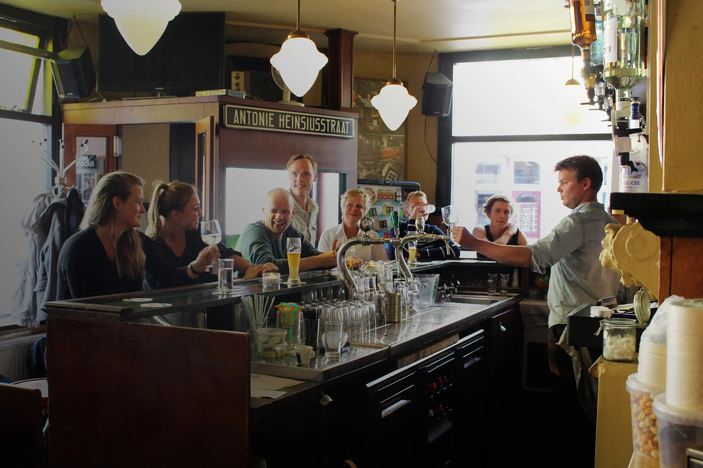
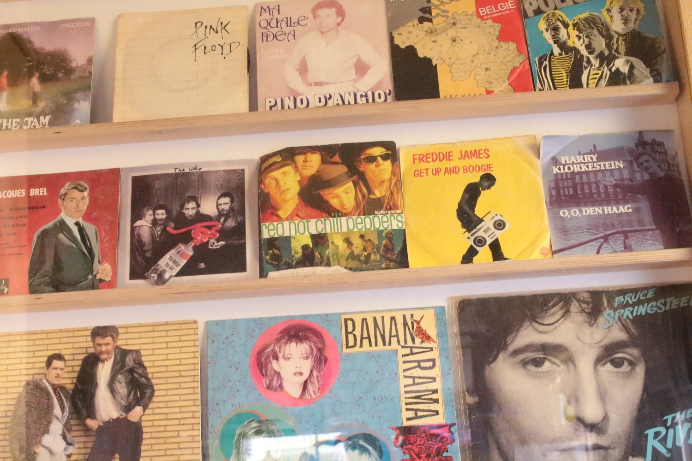

Café diner in het Statenkwartier, Den Haag
Café de Sien
Borrelen en tafelen. Your friendly neighbourhood bar with an international touch.
Nederland, Den Haag, Statenkwartier, Antonie Heinsiusstraat. Meer aanwijzingen heb je niet nodig als je Café de Sien zoekt.
Gewoon op de hoek, nummer 39, waar je een tref- en rustpunt vindt voor vaste en incidentele klanten, aanwaaiers en passanten. Voor de borrel, het diner, de nazit of later op de avond.
In Café de Sien ontmoeten locals en expats, jong en oud, buurtbewoners en buitenlui elkaar in alle rust of gezellige drukte. Bij ons loopt, zit en staat alles en iedereen door elkaar heen. Dat is een mooi gezicht.
We schenken een goed glas, bereiden betere en betaalbare gerechten uit alle windstreken, draaien de muziek die bij het moment past en zijn altijd in voor een prettig gesprek. Café de Sien is geschikt voor alle leeftijden, staat open voor alle gezindten.
Kom maar binnen.
Het team: Bo, Noah, Jaap, Jeroen, Matthijs, Jens, Zoe, Charley, Utah, Meltem, Tobias, Nina en Tinke.


Eindeloze muziekcollectie
Zonder muziek zou het leven een vergissing zijn. In ieder geval een stuk minder aangenaam.
Al vanaf de geboorte van Café de Sien in 1995 bepaalt muziek de sfeer waarnaar wij samen met onze klanten op zoek zijn. Vandaar de grote selectie cd's en vinyl, vandaar het ontbreken van een horecacomputer. We draaien het liefst muziek die bij het moment past, elke track weer.
Omdat die momenten sterk kunnen verschillen, is er een breed samengestelde collectie. Van oud tot nieuw, van pop tot rock, van rustig tot spannend, van up tempo tot mellow.
In Café de Sien is natuurlijk ook ruimte voor onze tweede grote liefde: de sport. Dat merk je aan de televisieschermen her en der die wij bij de mooiere sportevenementen inschakelen. Wel altijd met het commentaar op stil. Want muziek blijft op de eerste plaats staan.
Open & reserveren
We zijn open van maandag tot en met zaterdag. Zondag zijn we dicht.
Voor de actuele openingstijden: bel ons of kijk op Facebook.
Zomertijden (juli – augustus)
- maandag t/m donderdag16.00 – 01.00
- vrijdag en zaterdag16.00 – 01.30
- zondaggesloten
Reserveren
Wil je reserveren? Dat kan telefonisch.
Bel 070 - 355 55 66